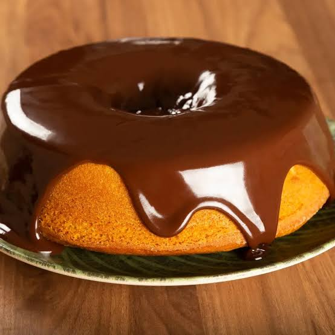

Bolo de Cenoura com Cobertura de Chocolate

Ingredientes
- 3 cenouras médias
- 4 ovos
- 1 xícara de óleo
- 2 xícaras de açúcar
- 2 e ½ xícaras de farinha de trigo
- 1 colher de sopa de fermento em pó
Modo de Preparo
- Bata no liquidificador as cenouras, os ovos e o óleo até formar um creme homogêneo.
- Em uma tigela, misture o açúcar e a farinha.
- Junte o creme líquido à mistura seca e mexa bem.
- Adicione o fermento por último e misture delicadamente.
- Despeje em uma forma untada e leve ao forno preaquecido a 180°C por 40 minutos.